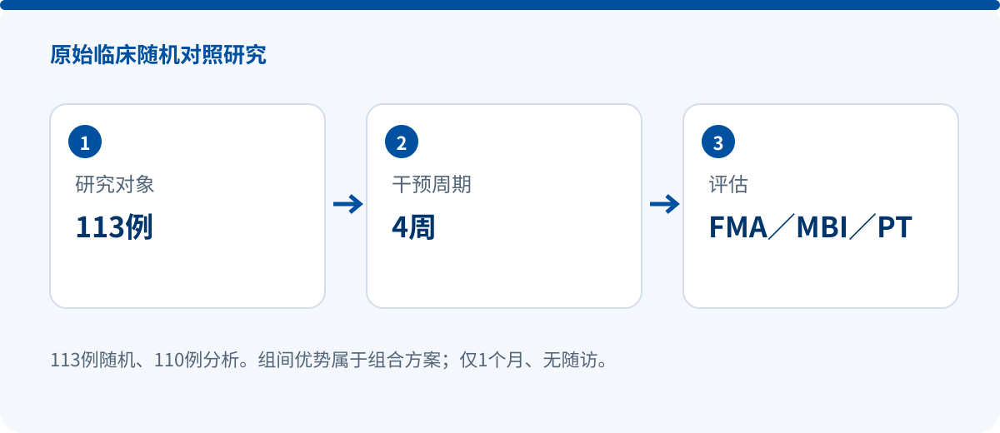

Fire-needle acupuncture plus robotic-glove mirror therapy: a four-week randomized study with 110 analyzed participants
RANDOMIZED CONTROLLED STUDY
火针联合机器人手套镜像疗法对脑卒中后手及上肢功能障碍影响
张伟、黄文婷、崔晓阳、郑婵娟、陈焱强
Asia-Pacific Traditional Medicine, 20(9): 73–78
DOI: 10.11954/ytctyy.202409014 · Original record
Yisheng SY-HR03Y | 113 randomized | 110 analyzed

Research design
The study was conducted in the Rehabilitation Department of Hubei Provincial Hospital of Integrated Chinese and Western Medicine and enrolled patients admitted between July 2022 and July 2023. Two participants in the observation group and one in the control group dropped out, leaving 55 analyzed participants per group.
Both groups received usual medication and rehabilitation. The control group used the Yisheng SY-HR03Y hand rehabilitation robot manufactured by Shanghai Siyi Intelligence Technology Co., Ltd. A data glove on the unaffected hand captured movement to drive the training glove on the affected hand. The protocol included 20 flexion–extension repetitions over ten minutes followed by a 20-minute ball-grasping mode; robot training was delivered for 20 minutes per session, once daily, five days per week for four weeks. The observation group additionally received five-minute fire-needle sessions three times per week for four weeks.
Key findings
- After four weeks, PT, AP, TW, FMA and MBI increased and RMS decreased within both groups. The observation group outperformed the control group on these measures, with the paper reporting P<0.05.
- Hand FMA changed from 7.53±1.64 to 18.42±2.71 in the observation group and from 7.24±1.30 to 13.67±2.26 in the control group; the reported post-treatment between-group p value was 0.000.
- Flexor peak torque changed from 7.26±2.13 to 13.17±2.34 in the observation group and from 7.01±2.55 to 10.01±3.26 in controls. Extensor peak torque changed from 6.88±2.49 to 11.26±2.18 and from 6.32±2.40 to 9.02±2.51, respectively. CR showed no clear change.
Why it matters
The study supports discussion of robotic-glove mirror therapy within a comprehensive rehabilitation pathway, not a claim that the glove alone outperforms another treatment. Because both groups used the glove, the between-group comparison tests the effect of adding fire-needle acupuncture to the package.
Evidence boundaries
- Only one month was assessed, with no follow-up; durability cannot be inferred.
- This was a single-center study with a modest sample; the authors call for larger multicenter and mechanistic studies.
- The observation group received additional fire-needle treatment, so the between-group advantage cannot be assigned to the glove alone.
- The paper prints p=0.000; this should be interpreted as p<0.001, not a literal zero probability.
Source and verification
Device names, sample accounting and numerical results follow the verified source scope stated above. No missing values are inferred.